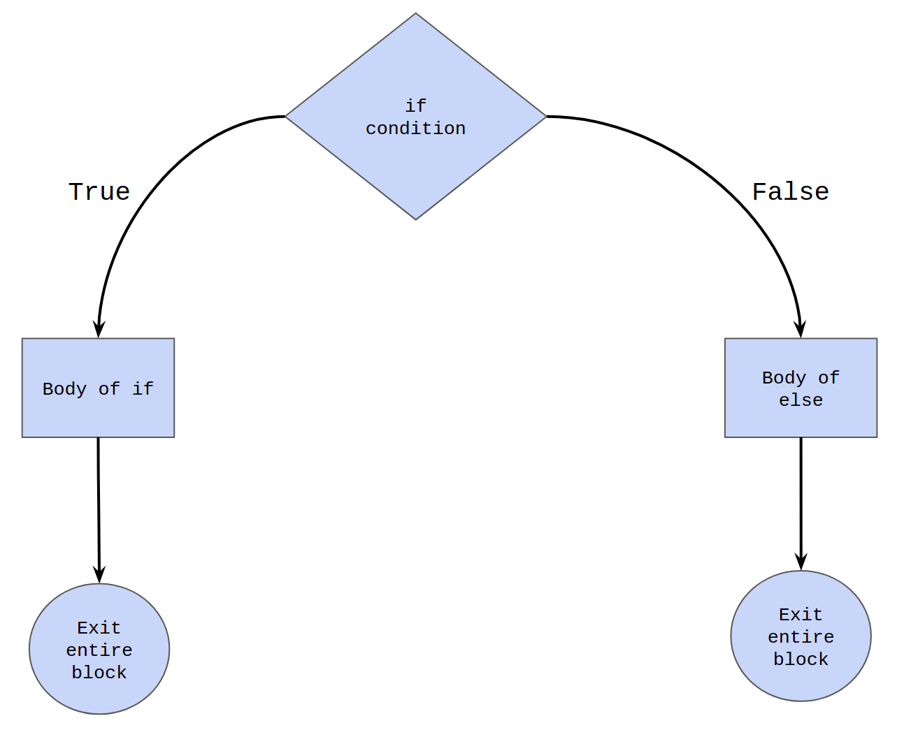

Lesson-2.3
Conditional Statements
Suppose you had to solve the following problem:
!!! question ” ” Accept an integer as input from the user. If the number is greater than zero, print positive and if number is less than zero, print negative, else print zero.
This problem can solved by so called Conditional Statements. Conditional Statements is a very important concept in Computer Science in general and are the building blocks to solutions for very complex problems. Conditional Statements, as the name suggests, allow for conditional execution of code. We will we see what this means in detail in the coming sections.
if statement
Let’s start off with a simpler version of the earlier problem !!! question ” ” Accept an integer as input from the user. If the number is greater than zero, print non-negative.
#!py if is a keyword in Python. The text adjacent to #!py if is a boolean expression, usually called the if-condition or just the condition. Line-3 is the body of #!py if. If the condition evaluates to True, then line-3 is executed. If it is False, then line-3 doesn’t get executed. The following diagram captures the terms that have been introduced:

The control flow of the if-statement as a flow chart is given below:

Thus we can solve the problem with if:
Note that line 3 in the solution code is indented. In this case, the indentation corresponds to four spaces. It is very important to keep this consistent throughout the program. In all lessons, the first level of indentation will have four space . To understand how indentation works and why it is necessary, consider the following code blocks:
Lines 3-5 in the following codes make up the if-block. Lines 4 and 5 which are indented make up the body of #!py if. Whenever the if-condition evaluates to True, the interpreter enters the body of #!py if and executes the lines sequentially. The indentation helps in separating the body of the if-block from the rest of the code.
=== “Positive x” python # Left x = 1 if x >= 0: print('non-negative') print('inside if') print('outside if') The condition is True. So lines 4 and 5 are going to be executed. Once we exit the if-block, the interpreter will resume execution from line 6. The output will be:
```
non-negative
inside if
outside if
```=== “Negative x” python # Right x = -1 if x >= 0: print('non-negative') print('inside if') print('outside if') The condition is False. So, lines 4 and 5 are not going to be executed. The interpreter will skip the body of if and directly move to line 6. The output will be
```
outside if
```if-else
Let us add one more level of complexity to the problem.
!!! question ” ” Accept an integer as input from the user. If the number is greater than or equal to zero, print: non-negative. If the number is less than zero, print negative.
#!py else is a keyword in Python. When the if-condition evaluates to True, the statements inside the body of the if-block are evaluated. When the condition evaluates to False, the statements inside the body of the else-block are evaluated.
A visual representation of the control flow:

Now that with else we can add additional conditional branching to our code and solve the question:
Line 2 checks if x is greater than or equal to 0. Upon failing that condition, the else block executes.
Points to remember:
#!py ifand#!py elseare at the same level of indentation.#!py elsecan never occur independent of an#!py ifin conditional statements.#!py elsecannot have any new condition associated with it.
The following code demonstrates the last two points:
if-elif-else
This final tool will help us solve the original problem:
!!! question ” ” Accept an integer as input from the user. If the number is greater than zero, print positive and if number is less than zero, print negative, else print zero.
#!py elif is a keyword in Python. It is a shorthand for else-if. With this final weapon in our conditional statements arsenal, we can solve the problem as thus
x = int(input())
if x > 0:
print('positive')
elif x == 0:
print('zero')
else:
print('negative')
# End of code| Input | Output |
|---|---|
| x = 1 | positive |
| x = 0 | zero |
| x = -1 | negative |
The entire #!py if-#!py elif-#!py else block has three sub-blocks in it:
- if-block: lines 2-3
- elif-block: lines 4-5
- else-block: lines 6-7
This is the process followed by the interpreter in executing the #!py if-#!py elif-#!py else block:
- If the if-condition evaluates to
True, line 3 is executed and then the control transfers to line-8. - If the if condition evaluates to
False, the control transfers to the elif block. If the elif condition evaluates toTrue, then line 5 is executed and then the control transfers to line 8. - If the elif condition is
False, the control transfers to the else block and line 7 is executed. As there are no more conditions to check, control naturally transfers to line 8.
A visual representation of the process is given below:

The general syntax:
Some features to note:
- Exactly one of the three statements gets executed.
- The moment either an
#!py ifor an#!py elifcondition evaluates toTrue, the body of that block is executed and the flow exits out of the entire#!py if-#!py elif-#!py elseblock. - There could be multiple
#!py elifconditions after the#!py if. - An
#!py elsecondition cannot come before an#!py elif. The final#!py elseblock is not mandatory and can be removed. If the#!py elseis present, it can only come at the end.
Nested conditional statements
Consider the following problem:
!!! question ” ” Accept three distinct integers as input from the user. If the numbers have been entered in ascending order, print in ascending order. If not, print not in ascending order.
An incomplete solution is given below:
# Incomplete solution
x = int(input())
y = int(input())
z = int(input())
if x < y:
print('in ascending order')
else:
print('not in ascending order')The problem with the above solution is that it doesn’t check if y < z. So, for an input like x, y, z = 1, 3, 2, it will print in ascending order, which is incorrect. The complete solution is given below:
x = int(input())
y = int(input())
z = int(input())
if x < y:
if y < z:
print('in ascending order')
else:
print('not in ascending order')
else:
print('not in ascending order')Whenever a new if block is introduced, its body should have exactly one level of indentation with respect to its if condition. Since line 7 makes up the body of the if block starting at line 6, it has one level of indentation with respect to line 6. However, line 6 is already at the first level of indentation with respect to line 5, so line 7 has two levels of indentation with respect to line 5. According to the convention we have chosen, two levels of indentation will correspond to eight spaces.
Having a conditional statement inside another conditional statement is called nesting. The if-block from lines 5-9 forms the outer block. The if-else block from lines 6-9 forms the inner block. The #!py else in line 8 is paired with the #!py if in line 6 as they are at the same level of indentation. For similar reasons, the #!py else in line 10 is paired with the #!py if in line 5.
Defining variables inside if
Consider the following snippet of code:
Run the code multiple times, varying the input each time. What do you observe?
Whenever the input is a multiple of 5, the code runs without any error. When the input is not divisible by 5, the code throws a NameError. This is because, we are trying to reference a variable that has not been defined. The variable output is created only if line 3 is executed during run-time. Its mere presence in the code is not enough.